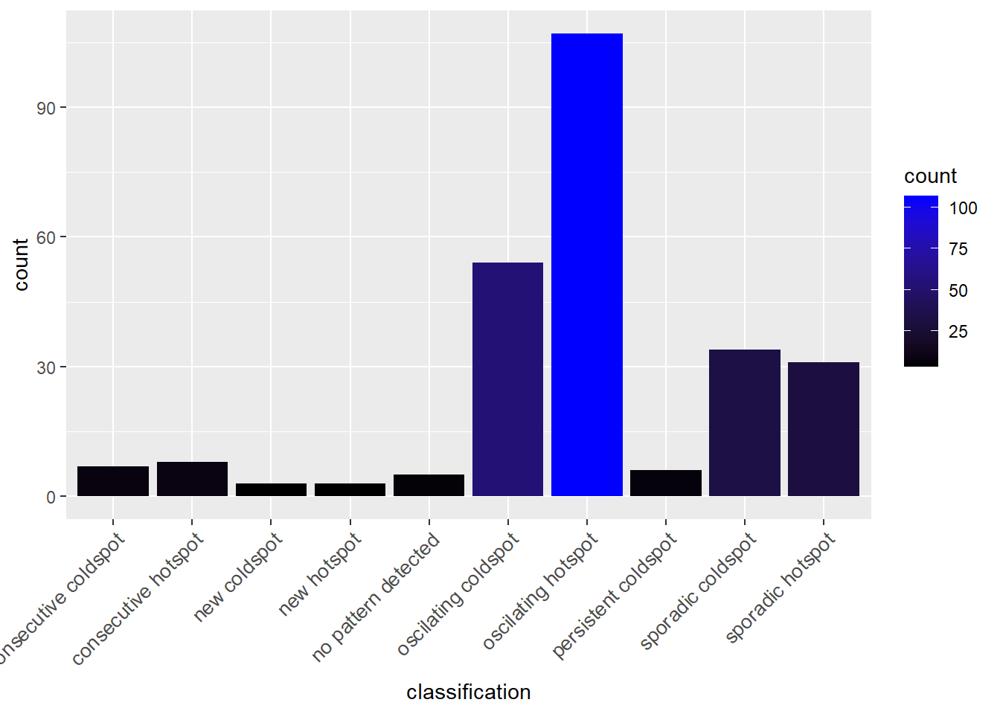

pacman::p_load(sf, tidyverse, tmap, sfdep, dplyr, zoo)Application of Spatial and Spatio-temporal Analysis Methods to Discover the Distribution of Dengue Fever in Tainan City, Taiwan
Take-home_Ex02
1.0 Introduction
1.1 Overview
Dengue Hemorrhagic Fever (in short dengue fever) is one of the most widespread mosquito-borne diseases in the most tropical and subtropical regions. It is an acute disease caused by dengue virus infection which is transmitted by female Aedes aegypti and Aedes albopictus mosquitoes. In 2015, Taiwan had recorded the most severe dengue fever outbreak with more than 43,000 dengue cases and 228 deaths. Since then, the annual reported dengue fever cases were maintained at the level of not more than 200 cases. However, in 2023, Taiwan recorded 26703 dengue fever cases.
1.2 Objectives
As a curious geospatial analytics green horn, you are interested to discover:
if the distribution of dengue fever outbreak at Tainan City, Taiwan are independent from space and space and time.
If the outbreak is indeed spatial and spatio-temporal dependent, then, you would like to detect where are the clusters and outliers, and the emerging hot spot/cold spot areas.
1.3 The Task
The specific tasks of this take-home exercise are as follows:
Using appropriate function of sf and tidyverse, preparing the following geospatial data layer:
a study area layer in sf polygon features. It must be at village level and confined to the D01, D02, D04, D06, D07, D08, D32 and D39 counties of Tainan City, Taiwan.
a dengue fever layer within the study area in sf point features. The dengue fever cases should be confined to epidemiology week 31-50, 2023.
a derived dengue fever layer in spacetime s3 class of sfdep. It should contain, among many other useful information, a data field showing number of dengue fever cases by village and by epidemiology week.
Using the extracted data, perform global spatial autocorrelation analysis by using sfdep methods.
Using the extracted data, perform local spatial autocorrelation analysis by using sfdep methods.
Using the extracted data, perform emerging hotspot analysis by using sfdep methods.
Describe the spatial patterns revealed by the analysis above.
2.0 Packages
The packages used in this project are:
sf: for importing, managing, and processing geospatial data
tidyverse: a family of R packages for performing data science tasks such as importing, wrangling, and visualizing data
tmap: creating thematic maps
sfdep: for analyzing spatial dependencies
3.0 Data Acquisition
For the purpose of this take-home exercise, two data sets are provided, they are:
| Data | Format | Description | Source |
|---|---|---|---|
| TAIWAN_VILLAGE_2020 | ESRI | A Geospatial data of village boundary of Taiwan. The data is in Taiwan Geographic Coordinate System. | Historical map data of the village boundary: TWD97 longitude and latitude |
| Dengue_Daily.csv | CSV | An Aspatial data of reported dengue cases in Taiwan since 1998. Below are selected fields that are useful for this study:
|
Dengue Daily Confirmed Cases Since 1998 |
4.0 Data Wrangling
Can reference In-Class_Ex05
4.1 Importing Taiwan Boundary dataset
Let’s see what layers the dataset has.
file_path = "../../data/geospatial/TAIWAN_VILLAGE_2020"
layers <- st_layers(file_path)
print(layers)Driver: ESRI Shapefile
Available layers:
layer_name geometry_type features fields crs_name
1 TAINAN_VILLAGE Polygon 649 10 TWD97Since it only has one “TAINAN_VILLAGE” layer, lets pull it.
taiwan_sf <- st_read(dsn="../../data/geospatial/TAIWAN_VILLAGE_2020", layer="TAINAN_VILLAGE")Reading layer `TAINAN_VILLAGE' from data source
`C:\russelltjh\IS415-GAA\data\geospatial\TAIWAN_VILLAGE_2020'
using driver `ESRI Shapefile'
Simple feature collection with 649 features and 10 fields
Geometry type: POLYGON
Dimension: XY
Bounding box: xmin: 120.0269 ymin: 22.88751 xmax: 120.6563 ymax: 23.41374
Geodetic CRS: TWD97Take note that this dataset is in TWD97 Geographic Coordinate System.
4.1.1 Extracting Polygon Study Area
head(taiwan_sf,1)Simple feature collection with 1 feature and 10 fields
Geometry type: POLYGON
Dimension: XY
Bounding box: xmin: 120.2695 ymin: 22.93251 xmax: 120.2905 ymax: 22.96072
Geodetic CRS: TWD97
VILLCODE COUNTYNAME TOWNNAME VILLNAME VILLENG COUNTYID COUNTYCODE
1 67000280002 臺南市 歸仁區 六甲里 Liujia Vil. D 67000
TOWNID TOWNCODE NOTE geometry
1 D33 67000280 <NA> POLYGON ((120.2725 22.95868...We are interested in the “TOWNID” column. Specifically the D01, D02, D04, D06, D07, D08, D32 and D39 counties of Tainan City, Taiwan.
# Assuming taiwan_sf is your imported sf object
study_area_sf <- taiwan_sf %>%
filter(TOWNID %in% c("D01", "D02", "D04", "D06", "D07", "D08", "D32", "D39"))
# Check the result
print(unique(study_area_sf$TOWNID))[1] "D06" "D32" "D08" "D02" "D39" "D01" "D04" "D07"4.1.2 Drop Unnecessary Columns
Let’s drop the “NOTE” column from the dataset
# Select only the necessary columns
study_area_sf <- study_area_sf %>%
select(VILLCODE, COUNTYNAME, TOWNNAME, VILLNAME, VILLENG, COUNTYID, COUNTYCODE, TOWNID, TOWNCODE, geometry)
# Check the result
print(study_area_sf)Simple feature collection with 258 features and 9 fields
Geometry type: POLYGON
Dimension: XY
Bounding box: xmin: 120.0627 ymin: 22.89401 xmax: 120.2925 ymax: 23.09144
Geodetic CRS: TWD97
First 10 features:
VILLCODE COUNTYNAME TOWNNAME VILLNAME VILLENG COUNTYID COUNTYCODE
1 67000350032 臺南市 安南區 青草里 Qingcao Vil. D 67000
2 67000270011 臺南市 仁德區 保安里 Bao'an Vil. D 67000
3 67000370005 臺南市 中西區 赤嵌里 Chihkan Vil. D 67000
4 67000330004 臺南市 南區 大成里 Dacheng Vil. D 67000
5 67000350028 臺南市 安南區 城北里 Chengbei Vil. D 67000
6 67000350030 臺南市 安南區 城南里 Chengnan Vil. D 67000
7 67000370009 臺南市 中西區 法華里 Fahua Vil. D 67000
8 67000350017 臺南市 安南區 海南里 Hainan Vil. D 67000
9 67000350049 臺南市 安南區 國安里 Guo'an Vil. D 67000
10 67000350018 臺南市 安南區 溪心里 Xixin Vil. D 67000
TOWNID TOWNCODE geometry
1 D06 67000350 POLYGON ((120.1176 23.08387...
2 D32 67000270 POLYGON ((120.2304 22.93544...
3 D08 67000370 POLYGON ((120.2012 22.99966...
4 D02 67000330 POLYGON ((120.1985 22.98147...
5 D06 67000350 POLYGON ((120.1292 23.06512...
6 D06 67000350 POLYGON ((120.1246 23.06904...
7 D08 67000370 POLYGON ((120.2094 22.98452...
8 D06 67000350 POLYGON ((120.175 23.02218,...
9 D06 67000350 POLYGON ((120.1866 23.02766...
10 D06 67000350 POLYGON ((120.1834 23.06086...4.2 Importing Dengue Daily dataset
This dataset contains the dengue cases in 2020 and is in TWD97 Geographic Coordinate System.
The data is in a geographic coordinate system with longitude and latitude, even though it is in decimal. It is not Projected Coordinate System.
dengue2023 <- read_csv("../../data/aspatial/DengueDaily/Dengue_Daily.csv")summary(dengue2023) 發病日 個案研判日 通報日
Min. :1998-01-02 Length:106861 Min. :1998-01-07
1st Qu.:2014-10-28 Class :character 1st Qu.:2014-10-31
Median :2015-09-29 Mode :character Median :2015-10-01
Mean :2016-03-31 Mean :2016-04-03
3rd Qu.:2023-06-19 3rd Qu.:2023-06-23
Max. :2024-01-29 Max. :2024-01-29
性別 年齡層 居住縣市 居住鄉鎮
Length:106861 Length:106861 Length:106861 Length:106861
Class :character Class :character Class :character Class :character
Mode :character Mode :character Mode :character Mode :character
居住村里 最小統計區 最小統計區中心點X 最小統計區中心點Y
Length:106861 Length:106861 Length:106861 Length:106861
Class :character Class :character Class :character Class :character
Mode :character Mode :character Mode :character Mode :character
一級統計區 二級統計區 感染縣市 感染鄉鎮
Length:106861 Length:106861 Length:106861 Length:106861
Class :character Class :character Class :character Class :character
Mode :character Mode :character Mode :character Mode :character
感染村里 是否境外移入 感染國家 確定病例數
Length:106861 Length:106861 Length:106861 Min. :1
Class :character Class :character Class :character 1st Qu.:1
Mode :character Mode :character Mode :character Median :1
Mean :1
3rd Qu.:1
Max. :2
居住村里代碼 感染村里代碼 血清型 內政部居住縣市代碼
Length:106861 Length:106861 Length:106861 Length:106861
Class :character Class :character Class :character Class :character
Mode :character Mode :character Mode :character Mode :character
內政部居住鄉鎮代碼 內政部感染縣市代碼 內政部感染鄉鎮代碼
Length:106861 Length:106861 Length:106861
Class :character Class :character Class :character
Mode :character Mode :character Mode :character
4.2.1 Extract Study Area
# First, convert '發病日' to Date format
dengue2023 <- dengue2023 %>%
mutate(發病日期 = ymd(發病日))
# Then, add a column for the epidemiological week and year
dengue2023 <- dengue2023 %>%
mutate(
EPID_WEEK = isoweek(發病日期),
EPID_YEAR = year(發病日期)
)
# Now, filter the data for epidemiological weeks 31-50 in 2023
dengue_week31_50_2023 <- dengue2023 %>%
filter(EPID_YEAR == 2023 & EPID_WEEK >= 31 & EPID_WEEK <= 50)
# Check the result
print(dengue_week31_50_2023)# A tibble: 25,480 × 29
發病日 個案研判日 通報日 性別 年齡層 居住縣市 居住鄉鎮 居住村里
<date> <chr> <date> <chr> <chr> <chr> <chr> <chr>
1 2023-07-31 2023/07/31 2023-07-31 女 30-34 台南市 永康區 埔園里
2 2023-07-31 2023/07/31 2023-07-31 男 55-59 台南市 東區 大智里
3 2023-07-31 2023/07/31 2023-07-31 男 5-9 台南市 永康區 五王里
4 2023-07-31 2023/07/31 2023-07-31 男 70+ 台南市 仁德區 成功里
5 2023-07-31 2023/07/31 2023-07-31 男 55-59 台南市 永康區 中興里
6 2023-07-31 2023/07/31 2023-07-31 男 30-34 雲林縣 古坑鄉 高林村
7 2023-07-31 2023/07/31 2023-07-31 女 40-44 台南市 永康區 復華里
8 2023-07-31 2023/08/01 2023-08-01 女 30-34 台南市 仁德區 仁德里
9 2023-07-31 2023/08/01 2023-08-01 男 70+ 雲林縣 古坑鄉 荷苞村
10 2023-07-31 2023/08/01 2023-08-01 男 15-19 台南市 東區 崇善里
# ℹ 25,470 more rows
# ℹ 21 more variables: 最小統計區 <chr>, 最小統計區中心點X <chr>,
# 最小統計區中心點Y <chr>, 一級統計區 <chr>, 二級統計區 <chr>,
# 感染縣市 <chr>, 感染鄉鎮 <chr>, 感染村里 <chr>, 是否境外移入 <chr>,
# 感染國家 <chr>, 確定病例數 <dbl>, 居住村里代碼 <chr>, 感染村里代碼 <chr>,
# 血清型 <chr>, 內政部居住縣市代碼 <chr>, 內政部居住鄉鎮代碼 <chr>,
# 內政部感染縣市代碼 <chr>, 內政部感染鄉鎮代碼 <chr>, 發病日期 <date>, …4.2.2 Drop Unnecessary Columns
In the Data Acquisition section, we mentioned that we only need these columns for the analysis:
發病日: Onset date
- Since in the above processing, we created a new field called (發病日期) with the modified date object, we will use that instead.
最小統計區中心點X: x-coordinate
最小統計區中心點Y: y-coordinate
EPID_WEEK: Epidemiology Week
Let’s keep only these 4 columns:
# Select only the necessary columns
dengue_cases <- dengue_week31_50_2023 %>%
select(發病日期, 最小統計區中心點X, 最小統計區中心點Y, EPID_WEEK)
# Check the result
print(dengue_cases)# A tibble: 25,480 × 4
發病日期 最小統計區中心點X 最小統計區中心點Y EPID_WEEK
<date> <chr> <chr> <dbl>
1 2023-07-31 120.253752333 23.031699814 31
2 2023-07-31 120.232374917 22.962366283 31
3 2023-07-31 120.235733496 23.013083716 31
4 2023-07-31 120.225744179 22.957479956 31
5 2023-07-31 120.236501733 23.004533744 31
6 2023-07-31 120.569102533 23.671263060 31
7 2023-07-31 120.248094155 23.014554416 31
8 2023-07-31 120.251073582 22.971075521 31
9 2023-07-31 120.584381057 23.668717366 31
10 2023-07-31 120.231829094 22.972059640 31
# ℹ 25,470 more rows4.2.3 Convert Coordinates to numeric values
I noticed that the coordinates are in ‘chr’ character strings. We need them to be in numeric.
dengue_cases <- dengue_cases %>%
mutate(
最小統計區中心點X = as.numeric(最小統計區中心點X),
最小統計區中心點Y = as.numeric(最小統計區中心點Y)
) %>%
na.omit()4.3 Combining and Aggregating the data
4.3.1 Spatial Join
Perform a spatial join between the dengue_cases points and the study_area_sf polygons to determine which dengue cases occur in which village.
# Convert dengue_cases to an sf object by using the coordinates
dengue_cases_sf <- st_as_sf(dengue_cases, coords = c("最小統計區中心點X", "最小統計區中心點Y"), crs = st_crs(study_area_sf))
# Perform the spatial join
study_area_cases_sf <- st_join(study_area_sf, dengue_cases_sf) %>%
na.omit()4.3.2 Aggregation by VILLCODE
Aggregate the cases by the ‘VILLCODE’ (village code)
# Aggregate by village name (VILLENG)
study_area_aggregated <- study_area_cases_sf %>%
group_by(VILLCODE) %>%
summarise(CASE_COUNT = n())
Why use Village Code instead of Village Name?
When exploring the data, I realized that the number of unique village codes are 257, while the number of unique values for VILLNAME and VILLENG is 252 and 248 respectively.
This means that some village codes will have duplicated Chinese and English village names. Therefore, to make sure the analysis is smoother, we will use the identifier with the most number of unique values.
4.3.3 Aggregation by VILLCODE and EPID_WEEK
Aggregate the cases by the ‘VILLCODE’ (village code) and ‘EPID_WEEK’ (epidemiological week) for spatio-temporal analysis later.
# Aggregate by village code (VILLCODE) and epidemiological week (EPID_WEEK)
study_area_time_aggregated <- study_area_cases_sf %>%
group_by(VILLCODE, EPID_WEEK) %>%
summarise(CASE_COUNT = n())4.4 Visualizing Data
Draw a choropleth map
equal <- tm_shape(study_area_aggregated) +
tm_fill("CASE_COUNT",
n = 5,
style = "equal") +
tm_borders(alpha = 0.5) +
tm_layout(main.title = "Equal interval classification")
quantile <- tm_shape(study_area_aggregated) +
tm_fill("CASE_COUNT",
n = 5,
style = "quantile") +
tm_borders(alpha = 0.5) +
tm_layout(main.title = "Equal quantile classification")
tmap_arrange(equal,
quantile,
asp=1,
ncol=2)4.5 Spacetime Object
In this section, we will create a spacetime cube object using the sfdep package.
We will use the study_area_time_aggregated data.
4.5.1 Expanding the data
Our study_area_time_aggregated dataset with location and time only stores the data of cases that occur. However, there will be location and times where no cases occur. We need to expand our data to include those rows with CASE_COUNT values of 0. This is required to make a proper spacetime cube object.
# Create a full grid of location and time period combinations
full_grid <- expand.grid(
VILLCODE = unique(study_area_sf$VILLCODE),
EPID_WEEK = unique(study_area_time_aggregated$EPID_WEEK)
)
# Join the grid with spatial data to ensure geometry is present for all villages
full_grid_with_geom <- left_join(full_grid, study_area_sf %>% select(VILLCODE, geometry), by = "VILLCODE")
# Join the spatially enriched grid with case count data
complete_data <- left_join(full_grid_with_geom, study_area_time_aggregated, by = c("VILLCODE", "EPID_WEEK"))
# Replace NA values in CASE_COUNT with zero
complete_data$CASE_COUNT[is.na(complete_data$CASE_COUNT)] <- 0
# Convert back to an sf object
complete_data <- complete_data %>%
select(-geometry.y) %>%
rename(geometry = geometry.x)
complete_data_sf <- st_as_sf(complete_data, sf_column_name = "geometry")4.5.2 Spacetime Cube Object Creation
Create a spacetime cube object using sfdep package, which will allow for the analysis of spatial and spatio-temporal patterns.
dengue_spt_cube <- as_spacetime(complete_data_sf, "VILLCODE", "EPID_WEEK")is_spacetime(dengue_spt_cube)[1] TRUEemerging_hotspot_analysis(dengue_spt_cube, "CASE_COUNT", threshold = 0.05)5.0 Global Spatial Autocorrelation
Global Spatial Autocorrelation measures the overall degree of spatial dependence within a geographic area.
The most common statistic for measuring global spatial autocorrelation is Moran’s I. This statistic compares the value of spatial data at one location with values at neighboring locations over the entire study area to determine if there is a significant pattern. If Moran’s I is positive and significant, it suggests a clustered pattern; if it is negative and significant, it suggests a dispersed pattern; if it is close to zero, it indicates a random spatial pattern.
Global Autocorrelation Analysis:
Calculate Moran’s I for the entire study area
Apply Monte Carlo simulation / Permutation Tests on the Moran’s I statistic
Assess the significance of the statistic to determine if there is a cluster or just random
5.1 Computing Contiguity Spatial Weights
Before we can compute the global spatial autocorrelation statistics, we need to construct a spatial weights of the study area. The spatial weights is used to define the neighbourhood relationships between the geographical units (i.e. county) in the study area.
We will derive the contiguity weights using the Queen’s method. (Similar to the way a Queen moves in chess, we will take into account neighbors in all principal directions - cardinal and intercardinal)
wm_q <- study_area_aggregated %>%
mutate(nb = st_contiguity(geometry),
wt = st_weights(nb,
style = "W"),
.before = 1)
wm_qSimple feature collection with 257 features and 4 fields
Geometry type: POLYGON
Dimension: XY
Bounding box: xmin: 120.0627 ymin: 22.89401 xmax: 120.2925 ymax: 23.09144
Geodetic CRS: TWD97
# A tibble: 257 × 5
nb wt VILLCODE CASE_COUNT geometry
* <nb> <list> <chr> <int> <POLYGON [°]>
1 <int [9]> <dbl [9]> 67000270001 37 ((120.2672 22.99655, 120.2668 2…
2 <int [3]> <dbl [3]> 67000270002 15 ((120.2659 22.99146, 120.2631 2…
3 <int [5]> <dbl [5]> 67000270003 39 ((120.2492 22.98265, 120.2492 2…
4 <int [12]> <dbl [12]> 67000270004 105 ((120.239 22.98012, 120.2389 22…
5 <int [3]> <dbl [3]> 67000270005 163 ((120.2577 22.97432, 120.2572 2…
6 <int [4]> <dbl [4]> 67000270006 15 ((120.2713 22.96804, 120.2712 2…
7 <int [5]> <dbl [5]> 67000270007 41 ((120.2404 22.95915, 120.2404 2…
8 <int [5]> <dbl [5]> 67000270008 30 ((120.2701 22.94841, 120.2684 2…
9 <int [5]> <dbl [5]> 67000270011 19 ((120.2304 22.93544, 120.2301 2…
10 <int [14]> <dbl [14]> 67000270012 62 ((120.2247 22.96165, 120.2247 2…
# ℹ 247 more rows5.2 Performing Global Moran’s I Test
Let’s run the Global Moran’s I test once.
global_moran_test(wm_q$CASE_COUNT,
wm_q$nb,
wm_q$wt)
Moran I test under randomisation
data: x
weights: listw
Moran I statistic standard deviate = 12.705, p-value < 2.2e-16
alternative hypothesis: greater
sample estimates:
Moran I statistic Expectation Variance
0.464386792 -0.003906250 0.001358653 5.3 Performing Global Moran’s I Permutation Test
We will apply Monte Carlo simulation to perform the statistical test 100 times.
First, we set a seed to maintain the reproduce-ability of the results.
set.seed(8888)Next, we will use the global_moran_perm() function to run the permutation test.
global_moran_perm(wm_q$CASE_COUNT,
wm_q$nb,
wm_q$wt,
nsim = 100)
Monte-Carlo simulation of Moran I
data: x
weights: listw
number of simulations + 1: 101
statistic = 0.46439, observed rank = 101, p-value < 2.2e-16
alternative hypothesis: two.sidedThe statistical report shows that the p-value is smaller than alpha value 0.05.
Therefore, we have enough evidence to reject the null hypothesis that the spatial distribution of cases resembles random distribution.
Since Moran’s I statistics is greater than 0, we can infer that the spatial distribution show signs of clustering.
6.0 Local Spatial Autocorrelation
Local Spatial Autocorrelation breaks down the global statistic into contributions from each individual location, allowing for the assessment of where and how much each feature contributes to the overall autocorrelation statistic.
Local indicators of spatial association (LISA), such as Local Moran’s I, allow for the identification of clusters or outliers where a feature has a value significantly different from its neighbors. This local approach helps to pinpoint specific areas of interest within the global context.
Local Autocorrelation Analysis:
Calculate Local Moran’s I for each feature in the dataset
Create a significance map that highlights areas of significant local clustering or outliers
Use this detailed view to identify hot spots (high values surrounded by high values), cold spots (low values surrounded by low values), and spatial outliers (high values surrounded by low values or vice versa)
6.1 Computing Local Moran’s I
lisa <- wm_q %>%
mutate(local_moran = local_moran(
CASE_COUNT, nb, wt, nsim = 99),
.before = 1) %>%
unnest(local_moran)The output of local_moran() is a sf data.frame containing some of the following columns:
| Column | Description |
|---|---|
| ii | Local Moran statistic |
| eii | Expected Local Moran statistic; or the permutation sample mean |
| var_ii | Variance of Local Moran statistic; or the permutation sample deviations |
| z_ii | Standard deviate of Local Moran statistic |
| p_ii | p-value of Local Moran statistic using pnorm() |
6.2 Visualizing Local Moran’s I
tmap_mode("plot")
tm_shape(lisa) +
tm_fill("ii", midpoint = NA, palette = rev(c("red", "lightyellow"))) +
tm_borders(alpha = 0.5) +
tm_view(set.zoom.limits = c(6,8)) +
tm_layout(main.title = "Local Moran's I for Case Count",
main.title.size = 0.8)6.3 Visualizing p-value of local Moran’s I
Let’s plot a map that shows the significance value of each region.
tmap_mode("plot")
tm_shape(lisa) +
tm_fill("p_ii_sim") +
tm_borders(alpha = 0.5) +
tm_layout(main.title = "p-value of Local Moran's I",
main.title.size = 0.8)6.4 Visualizing LISA map
The LISA map will categorize each region to show the outliers and clusters.
Types of clusters and outliers:
| Clusters | Outliers |
|---|---|
| High-High | High-Low |
| Low-Low | Low-High |
In the lisa sf data.frame, there are 3 fields: mean, median and pysal. In general, classification in mean will be used.
lisa_sig <- lisa %>%
filter(p_ii < 0.05)
tmap_mode("plot")
tm_shape(lisa) +
tm_polygons() +
tm_borders(alpha = 0.5) +
tm_shape(lisa_sig) +
tm_fill("mean") +
tm_borders(alpha = 0.4)Based on the LISA map, we can see that the outliers are nearer to the surroundings of the study area, while the clusters are in the middle.
We can observe that there is about 2-4 clusters in the middle, with some areas with low intensity being surrounded by those clusters.
7.0 Emerging Hot Spot and Cold Spot Area Analysis (HCSA)
Emerging Hot Spot Analysis (EHSA) is a spatio-temporal analysis method for revealing and describing how hot spot and cold spot areas evolve over time.
Emerging Hot Spot Analysis:
Build a spacetime cube (as done in section 4.5 with
dengue_spt_cube)Use the
emerging_hotspot_analysis()ofsfdeppackage.
7.1 Performing Emerging Hot Spot Analysis
ehsa <- emerging_hotspot_analysis(
x = dengue_spt_cube,
.var = "CASE_COUNT",
k = 1, # specify number of time lags (default = 1)
nsim = 99
)7.2 Visualizing the distribution of EHSA classes
Below, ggplot2 functions is used to reveal the distribution of EHSA classes.
ehsa_counts <- ehsa %>%
group_by(classification) %>%
summarise(count = n()) %>%
ungroup()
ggplot(data = ehsa_counts,
aes(x = classification,
y = count,
fill = count)) +
geom_col() +
scale_fill_gradient(low = "black", high = "blue") +
theme(axis.text.x = element_text(size = 10, angle = 45, hjust = 1))
7.3 Visualizing EHSA
We first need to join both our study_area_sf (polygon boundaries) and ehsa data together.
taiwan_ehsa <- study_area_sf %>%
left_join(ehsa,
by = join_by(VILLCODE == location))Next, we will use tmap functions to plot a categorical choropleth map.
ehsa_sig <- taiwan_ehsa %>%
filter(p_value < 0.05)
tmap_mode("plot")
tm_shape(taiwan_ehsa) +
tm_polygons() +
tm_borders(alpha = 0.5) +
tm_shape(ehsa_sig) +
tm_fill("classification", title = "Area Type") +
tm_borders(alpha = 0.4) +
tm_layout(main.title = 'Emerging Hot Spot Analysis',
main.title.position = 'center',
legend.text.size = 0.5,
legend.title.size = 1)7.x.x Computing Gi* statistics
Warning
This section is omitted due to errors.
Let’s first identify neighbors and derive their inverse distance weights.
dengue_nb <- dengue_spt_cube %>%
activate("geometry") %>%
mutate(nb = include_self(st_contiguity(geometry)),
wt = st_inverse_distance(nb, geometry,
scale = 1,
alpha = 1),
.before = 1) %>%
set_nbs("nb") %>%
set_wts("wt")dengue_nb <- as_tibble(dengue_nb)
dengue_nb# A tibble: 5,160 × 5
VILLCODE EPID_WEEK CASE_COUNT nb wt
<chr> <dbl> <dbl> <list> <list>
1 67000350032 31 0 <int [4]> <dbl [4]>
2 67000270011 31 1 <int [6]> <dbl [6]>
3 67000370005 31 0 <int [9]> <dbl [9]>
4 67000330004 31 0 <int [7]> <dbl [7]>
5 67000350028 31 0 <int [5]> <dbl [5]>
6 67000350030 31 0 <int [8]> <dbl [8]>
7 67000370009 31 0 <int [5]> <dbl [5]>
8 67000350017 31 0 <int [11]> <dbl [11]>
9 67000350049 31 0 <int [6]> <dbl [6]>
10 67000350018 31 0 <int [7]> <dbl [7]>
# ℹ 5,150 more rowsNow, we will compute the local Gi* for each area. We do this by grouping by epideomilegoy week and using local_gstar_perm() of sfdep package. After which, we use unnest() to unnest gi_star column of the newly created data.frame.
gi_stars <- dengue_nb %>%
group_by(EPID_WEEK) %>%
mutate(gi_star = local_gstar_perm(
CASE_COUNT, nb, wt)) %>%
tidyr::unnest(gi_star)